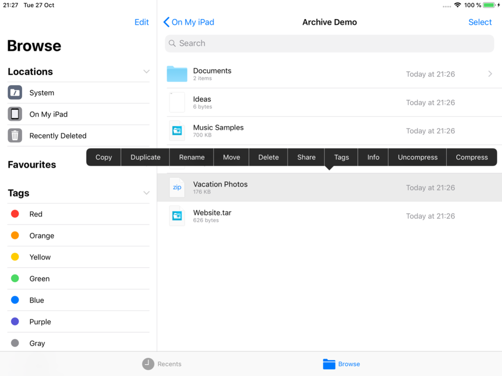
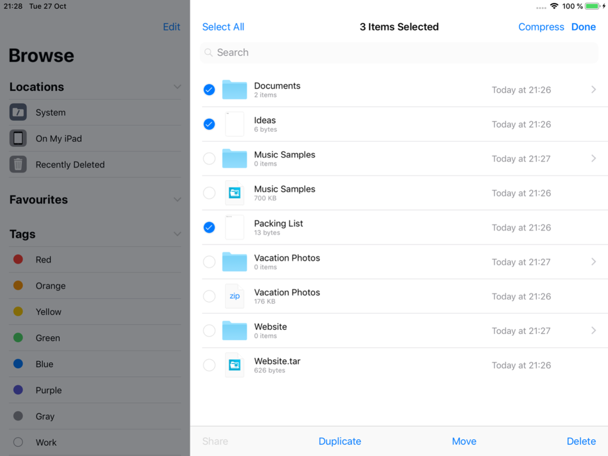
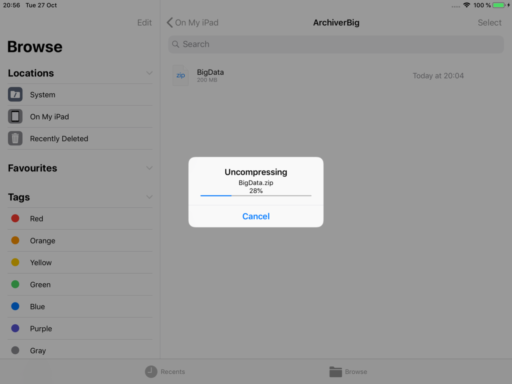
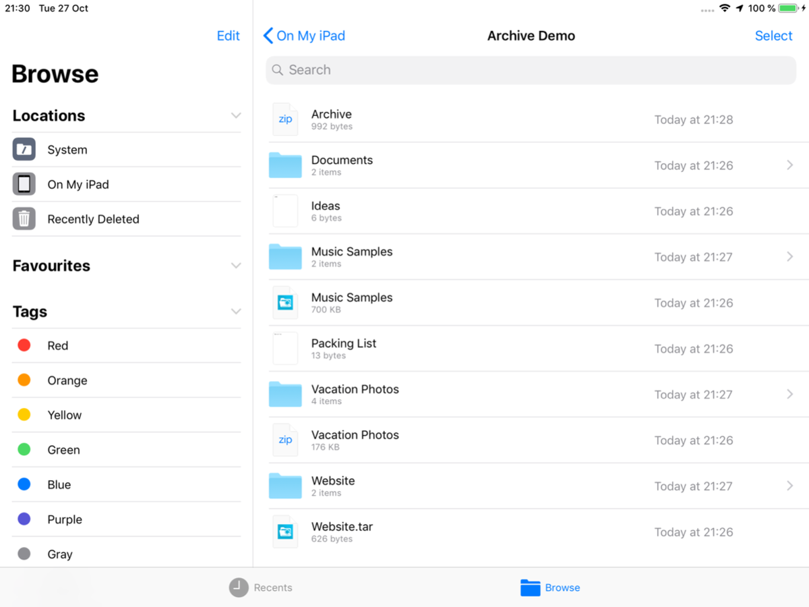
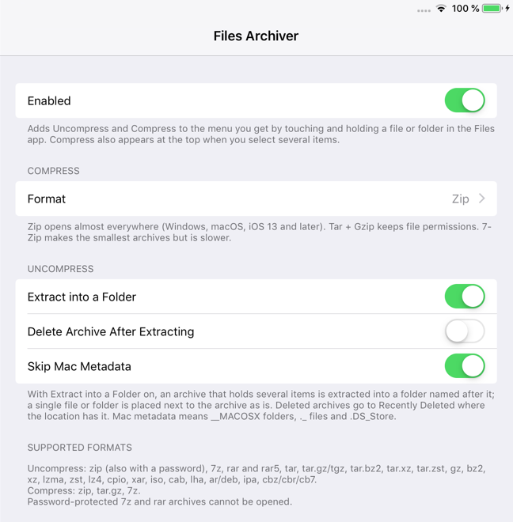

FilesArchiver (iOS 12)
On iOS 12 the Files app can only peek into a zip file. It can't extract it, and it can't make archives at all.
FilesArchiver adds Uncompress and Compress to the menu you get when you touch and hold an item, and Compress to the top bar when you select several items. It opens zip (including password-protected zips), 7z, rar, tar, tar.gz and many more, and creates zip, tar.gz or 7z archives.
Archives are treated as untrusted: everything is extracted into a private folder and checked first, ../ paths and unsafe links are dropped, and nothing is ever written over an existing file.
Screenshots





Features
- Uncompress zip (with a password prompt for password-protected zips), 7z, rar and rar5, tar, tar.gz, tar.bz2, tar.xz, tar.zst, gz, bz2, xz, zst, lz4, cpio, xar, iso, cab, lha, deb, ipa, cbz/cbr/cb7
- Compress to zip (default), tar.gz or 7z: one file, several files or folders
- Names like iOS 13: Name.zip, Archive.zip, and " 2" instead of overwriting anything
- Progress with Cancel; the work runs in the background and memory use stays flat, even for very large archives
- Keeps at least 500 MB free on the device; a job that can't finish stops, cleans up and says why
- Settings: format, extract into a folder, delete the archive after extracting (to Recently Deleted), skip Mac metadata
Settings
Settings > Files Archiver:
- Enabled: turns the tweak on or off.
- Format: what Compress creates: Zip (default, opens almost everywhere), Tar + Gzip (keeps file permissions) or 7-Zip (smallest, slower).
- Extract into a Folder (on): an archive with several items is extracted into a folder named after it.
- Delete Archive After Extracting (off): moves the archive to Recently Deleted after a successful extraction.
- Skip Mac Metadata (on): leaves out
__MACOSXfolders,._files and.DS_Store.
Changes apply right away.
Compatibility
- Tested on iPad mini 2, iOS 12.5.8 (checkra1n + odysseyra1n / libhooker)
- Expected to work on iOS 12.x, on iPhone as well as iPad (tested on iPad)
- Needs libarchive13 from Procursus (installed automatically)
- Password-protected 7z and rar archives and multi-volume archives are not supported
Changelog
Version 1.0.1
- First public release.
- Safety and robustness fixes from a full review: memory use stays flat for huge archives and archives with tens of thousands of files.
- Links: only relative links that stay inside their own extracted item are kept; nothing is ever written through a link.
- Free space: keeps at least 500 MB free; a job that can't finish stops and removes what it wrote.
- Names over 255 bytes and paths nested too deeply are skipped and counted instead of failing the job.
- Refused at once, with a message, where new items aren't accepted (the top level of On My iPad, read-only locations).
- Clearer progress and messages: many small files, several jobs at once, archives with only hidden items, jobs stopped by iOS in the background.
Version 1.0.0
- First version (not published).
Information
| Version | 1.0.1 |
| Developer | itsAllexB |
| Size | 40 KB |
| License | GPL-3.0 |
| Source code | GitHub |
| Problems | Report an issue |
Unofficial. Not affiliated with or endorsed by Apple.